Goniometria de punho e coluna
Primeiro encontro prático da disciplina. Em grupo, usamos o goniômetro para medir a amplitude de movimento (ADM) do punho e da coluna cervical e lombar, com base no manual de goniometria, registrando cada avaliação em vídeo.
Contexto: o que estudamos antes de medir
Goniometria é a técnica de mensurar os ângulos formados pelas articulações. Com ela dá pra avaliar a amplitude de movimento, acompanhar a evolução do paciente ao longo do tratamento e embasar as condutas terapêuticas com medidas objetivas e reprodutíveis.
- Eixo do goniômetro: fica sobre o centro articular, o ponto de rotação da articulação avaliada.
- Braço fixo: alinhado ao segmento proximal, em relação à articulação.
- Braço móvel: acompanha o segmento distal durante o movimento e registra a amplitude.
- Posição de referência: posição anatômica, com corpo ereto, olhar à frente, palmas para frente e pés paralelos.
| Plano | Divide o corpo em | Eixo |
|---|---|---|
| Sagital | direito e esquerdo | látero-lateral |
| Frontal | anterior e posterior | ântero-posterior |
| Transversal | superior e inferior | longitudinal |
O que fizemos
O grupo (Diego, Gustavo, Jennyfer, Raiane e Sirlene) se alternou nos papéis de avaliador e avaliado. Em cada movimento, posicionamos o paciente, alinhamos os braços do goniômetro conforme os pontos de referência do manual, registramos a amplitude e tomamos cuidado com os movimentos compensatórios listados nas precauções. Ao final, cada integrante preencheu seu próprio roteiro e entregou no Google Classroom.
Resultados por região
A coluna "Roteiro" traz os valores preenchidos no roteiro da aula. A coluna "Manual" traz a amplitude de referência (Kapandji, 2005, para o punho; Marques, 2003, para a coluna).
Punho
| Movimento | Roteiro | Manual | Plano / eixo | Principais músculos |
|---|---|---|---|---|
| Flexão | 40° | 0–85° | Sagital / látero-lateral | Flexor radial do carpo, flexor ulnar do carpo |
| Extensão | 60° | 0–85° | Sagital / látero-lateral | Extensor radial longo e curto do carpo, extensor ulnar do carpo |
| Adução | 30° | 0–45° | Frontal / ântero-posterior | Flexor ulnar do carpo, extensor ulnar do carpo |
| Abdução | 15° | 0–15° | Frontal / ântero-posterior | Extensor radial longo do carpo, abdutor longo do polegar |
Como medimos:
- Flexão e extensão: paciente sentado, antebraço em pronação, cotovelo a cerca de 90°. Braço fixo na face medial da ulna, braço móvel no 5º metacarpo, eixo na face medial do punho. Dedos relaxados e sem desvio radial ou ulnar.
- Abdução e adução: antebraço em posição neutra entre pronação e supinação. Braço fixo na face posterior do antebraço, apontando para o epicôndilo lateral. Braço móvel no dorso do 3º metacarpo, eixo na articulação radiocarpal. Sem flexão ou extensão do punho.
Coluna cervical
| Movimento | Roteiro | Manual | Plano / eixo | Principais músculos |
|---|---|---|---|---|
| Flexão | 60° | 0–65° | Sagital / látero-lateral | Esternocleidomastoideo, escaleno |
| Extensão | 50° | 0–50° | Sagital / látero-lateral | Esplênio, trapézio |
| Flexão lateral | 36° | 0–40° | Frontal / ântero-posterior | Escaleno, esternocleidomastoideo |
| Rotação | 48° | 0–55° | Transversal / longitudinal | Esternocleidomastoideo, esplênio |
Como medimos:
- Flexão e extensão: paciente sentado, coluna cervical alinhada. Braço fixo na altura do acrômio, paralelo ao solo, no plano da 7ª vértebra cervical. Braço móvel dirigido ao lóbulo da orelha no fim do movimento. Sem flexão de tronco, rotação ou inclinação.
- Flexão lateral: braço móvel na linha média da coluna cervical, dirigido à protuberância occipital externa. Sem elevar o ombro.
- Rotação: braço fixo no centro da cabeça, sobre a sutura sagital, e braço móvel acompanhando a sutura no fim do movimento. Sem rotação de tronco.
Coluna lombar
| Movimento | Roteiro | Manual | Plano / eixo | Principais músculos |
|---|---|---|---|---|
| Flexão | 70° | 0–95° | Sagital / látero-lateral | Reto abdominal, oblíquos externo e interno |
| Extensão | 25° | 0–35° | Sagital / látero-lateral | Eretor da espinha, multífidos |
| Flexão lateral | 30° | 0–40° | Frontal / ântero-posterior | Quadrado lombar, eretor da espinha |
| Rotação | 35° | 0–35° | Transversal / longitudinal | Oblíquos externo e interno |
Como medimos:
- Flexão e extensão: paciente em pé, pés juntos e alinhados, medida pela lateral. Eixo na espinha ilíaca ântero-superior e braço móvel ao longo da linha axilar média. Sem flexionar ou hiperestender os joelhos.
- Flexão lateral: braço fixo na linha das espinhas ilíacas póstero-superiores e braço móvel dirigido ao processo espinhoso de C7. Sem inclinar a pelve.
- Rotação: paciente sentado o mais ereto possível, girando para o lado avaliado. Sem rotação cervical ou pélvica.
Filmagens e fotos
Registro da atividade em sala. Os quadros abaixo foram tirados do vídeo.
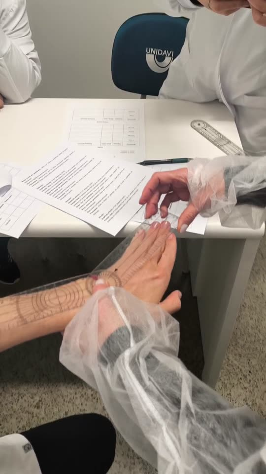


Reflexão
O que fica dessa aula: percebi como pequenas mudanças na posição do paciente e no alinhamento do goniômetro alteram bastante a medida final, quais compensações foram mais difíceis de controlar durante a avaliação, e como esse cuidado técnico se conecta com a prática da Terapia Ocupacional.
Goniometria de ombro e cotovelo
Segundo encontro prático da disciplina. Voltamos a usar o goniômetro em grupo, dessa vez para avaliar a amplitude de movimento (ADM) do ombro e do cotovelo, sempre seguindo o manual de goniometria e com registro em vídeo de cada avaliação.
Contexto: o que revisamos antes de medir
Por ser a articulação com maior mobilidade do corpo, o ombro exige atenção redobrada no posicionamento do goniômetro, já que o tronco e a escápula tendem a compensar o movimento. Já o cotovelo reúne dois tipos de movimento: flexão e extensão (articulação umeroulnar) e pronação e supinação (articulação radioulnar).
- Ombro: flexão, extensão, adução, abdução, rotação interna e rotação externa.
- Cotovelo: flexão, extensão, pronação e supinação do antebraço.
- Cuidado principal: evitar compensações do tronco, da escápula e do punho durante a medição, já que o ombro tende a "roubar" movimento das articulações vizinhas.
O que fizemos
Assim como no primeiro encontro, o grupo (Diego, Gustavo, Jennyfer, Raiane e Sirlene) revezou os papéis de avaliador e avaliado. Posicionamos o paciente de acordo com o manual em cada movimento, alinhamos o goniômetro nos pontos de referência e medimos as amplitudes do ombro e do cotovelo. Por fim, cada um preencheu seu roteiro individualmente e entregou no Google Classroom.
Resultados por região
A coluna "Roteiro" traz os valores preenchidos no roteiro da aula. A coluna "Manual" traz a amplitude de referência (Kapandji, 2011, para o ombro e cotovelo; Marques, 2003, para pronação e supinação).
Ombro
| Movimento | Roteiro | Manual | Plano / eixo | Principais músculos |
|---|---|---|---|---|
| Flexão | 160° | 0–180° | Sagital / látero-lateral | Deltoide, peitoral maior |
| Extensão | 120° | 0–45° | Sagital / látero-lateral | Latíssimo do dorso, deltoide, redondo maior |
| Adução | 20° | 0–40° | Frontal / ântero-posterior | Latíssimo do dorso, peitoral maior, redondo maior |
| Abdução | 150° | 0–180° | Frontal / ântero-posterior | Supraespinhal, deltoide, trapézio |
| Rotação interna | 72° | 0–90° | Longitudinal / transversal | Subescapular, peitoral maior |
| Rotação externa | 90° | 0–90° | Longitudinal / transversal | Infraespinhal, redondo menor |
Observação: o valor de extensão do roteiro (120°) foge do padrão do manual (0–45°) — provavelmente uma troca com a flexão ao preencher; vale conferir com o grupo antes de entregar.
Como medimos:
- Flexão e extensão: paciente sentado, braços ao longo do corpo. Braço fixo na linha axilar média do tronco, apontando para o trocânter maior do fêmur. Braço móvel na face lateral do úmero, voltado ao epicôndilo lateral. Eixo próximo ao acrômio. Sem hiperextensão lombar, abdução do ombro ou elevação da escápula.
- Abdução: paciente de costas para o avaliador, palma da mão voltada para frente. Braço fixo na linha axilar posterior, braço móvel na face posterior do braço, eixo próximo ao acrômio. Sem inclinar a coluna ou elevar a escápula.
- Rotação interna e externa: paciente deitado, ombro abduzido a 90°, cotovelo fletido a 90°, antebraço em supinação. Braço fixo paralelo ao solo, braço móvel na região posterior do antebraço em direção ao 3º dedo, eixo paralelo ao olécrano. Ombro mantido a 90° de abdução durante toda a medição.
Cotovelo
| Movimento | Roteiro | Manual | Plano / eixo | Principais músculos |
|---|---|---|---|---|
| Flexão | 121° | 0–145° | Sagital / látero-lateral | Bíceps braquial, braquial, braquiorradial |
| Extensão | 0° | 0–45° | Sagital / látero-lateral | Tríceps braquial, ancôneo |
| Pronação | 90° | 0–90° | Transversal / longitudinal | Pronador redondo, pronador quadrado |
| Supinação | 90° | 0–90° | Transversal / longitudinal | Supinador, bíceps braquial |
Como medimos:
- Flexão e extensão: paciente sentado, em pé ou deitado, membro junto ao tronco. Braço fixo ao longo do úmero em direção ao acrômio, braço móvel na face lateral do rádio apontando para o processo estiloide. Eixo no epicôndilo lateral do úmero. Sem flexionar o ombro.
- Pronação e supinação: cotovelo fletido a 90°, braço junto ao corpo, antebraço em posição neutra, segurando um lápis. Braço fixo na superfície dorsal dos metacarpais, paralelo ao úmero (permanece fixo). Braço móvel acompanha o lápis ou o polegar. Eixo na articulação metacarpofalângica do dedo médio. Cotovelo mantido junto ao tronco durante toda a medição.
Questões respondidas
1. Redução de ADM do ombro (flexão e abdução) e seu impacto nas AVDs. Essa perda de amplitude pode ter várias causas: dor, rigidez articular, encurtamento ou fraqueza muscular, edema, alterações na articulação ou na musculatura, e até o medo de movimentar o braço. O resultado é uma independência funcional comprometida, com o paciente tendendo a compensar com outras partes do corpo em tarefas como pentear o cabelo, se vestir ou alcançar algo numa prateleira alta.
2. Dor e redução de ADM depois de um período de imobilização (rotação externa e abdução). O medo da dor, a fraqueza muscular, a mobilidade reduzida e o desgaste da cartilagem se somam e explicam boa parte dessa perda de flexibilidade. A intervenção passa por exercícios de amplitude de movimento, fortalecimento muscular e treino funcional de AVDs (simulando pentear o cabelo, se vestir, estender roupas), sempre devolvendo segurança e independência de forma gradual.
Filmagens e fotos
Registro da atividade em sala. Os quadros abaixo foram tirados do vídeo.


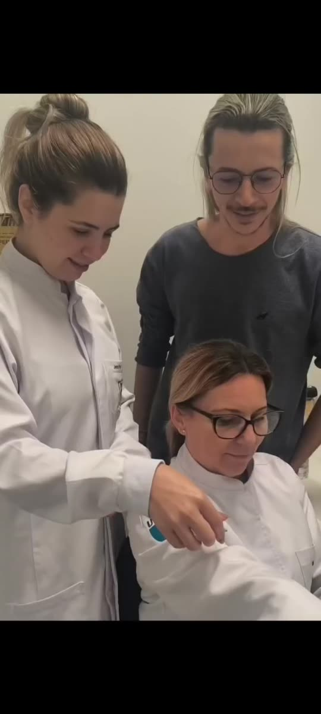

Reflexão
O que fica dessa aula: como o ombro compensa com o tronco e a escápula na hora da medição, a diferença prática entre avaliar uma articulação com dois eixos de movimento (o cotovelo) e outra com múltiplos graus de liberdade (o ombro), e a relação disso com a prática da Terapia Ocupacional.
Goniometria de membros inferiores
Terceiro encontro prático da disciplina, dedicado aos membros inferiores. Em grupo, medimos com o goniômetro a amplitude de movimento (ADM) de quadril, joelho e tornozelo, seguindo o manual de goniometria e filmando cada avaliação.
Contexto: o que revisamos antes de medir
No membro inferior, três articulações cumprem papéis diferentes na marcha e no equilíbrio: o quadril, com ampla mobilidade em vários planos; o joelho, que funciona basicamente como uma dobradiça de flexão e extensão; e o tornozelo, que combina dois eixos de movimento (dorsiflexão/flexão plantar e inversão/eversão) para adaptar o pé ao solo.
- Quadril: flexão, extensão, abdução, adução, rotação interna e rotação externa.
- Joelho: flexão e extensão.
- Tornozelo: dorsiflexão, flexão plantar, inversão e eversão.
O que fizemos
Com o paciente deitado na maca, o grupo (Diego, Gustavo, Jennyfer, Raiane e Sirlene) revezou avaliador e avaliado. Posicionamos o goniômetro nos pontos de referência de cada articulação, medimos as amplitudes e anotamos os músculos envolvidos em cada movimento. Ao final, cada um preencheu individualmente o roteiro e entregou no Google Classroom.
Resultados por região
Quadril
| Movimento | Posição do goniômetro | Principais músculos |
|---|---|---|
| Flexão | 180° | Iliopsoas, reto femoral, tensor da fáscia lata |
| Extensão | 180° | Glúteo máximo, bíceps femoral |
| Abdução | 90° | Glúteo médio, glúteo mínimo |
| Adução | 90° | Adutor longo, adutor curto, grácil |
| Rotação externa | Fechado (0°) | Piriforme, quadrado femoral |
| Rotação interna | Fechado (0°) | Glúteo mínimo, glúteo médio |
Nota: esses valores são a leitura inicial do goniômetro mostrada no vídeo (a posição de partida da medição), não a amplitude final atingida pelo paciente. Se vocês registraram o grau final de cada movimento no roteiro, me manda que eu completo a tabela com os valores medidos ao lado da referência do manual (aprox. flexão 0–120°, extensão 0–20°, abdução 0–45°, adução 0–30°, rotações 0–35 a 45°, Kapandji 2011).
Joelho
| Movimento | Roteiro | Manual | Plano / eixo | Principais músculos |
|---|---|---|---|---|
| Flexão | 140° | 0–135° (até 140° em Kapandji) | Sagital / látero-lateral | Bíceps femoral, semitendíneo, semimembranoso |
| Extensão | 150° | 0° | Sagital / látero-lateral | Reto femoral, vasto lateral, vasto medial, vasto intermédio |
Observação: o valor de extensão do roteiro (150°) é maior que a referência do manual (0°, posição neutra) — confira com o grupo se não foi trocado com a flexão, ou se corresponde à leitura direta do goniômetro (180° fechado − amplitude medida).
Tornozelo
| Movimento | Roteiro | Manual | Plano / eixo | Principais músculos |
|---|---|---|---|---|
| Dorsiflexão | 30° | 0–20° | Sagital / látero-lateral | Extensor longo dos dedos, extensor longo do hálux |
| Flexão plantar | 35° | 0–50° | Sagital / látero-lateral | Gastrocnêmio, sóleo, plantar, tibial posterior |
| Eversão | 25° | 0–20° | Frontal / ântero-posterior | Fibular longo, fibular curto |
| Inversão | 45° | 0–35° | Frontal / ântero-posterior | Tibial posterior, tibial anterior |
Filmagens e fotos
Registro da atividade em sala. Os quadros abaixo foram tirados do vídeo, que já traz legendas com o músculo e a posição do goniômetro em cada movimento do quadril.
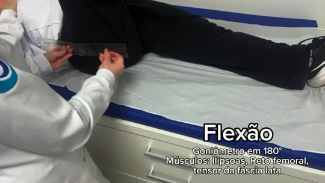
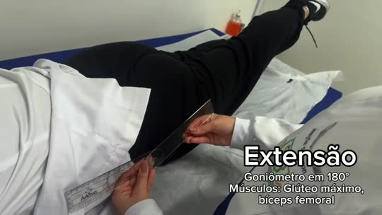
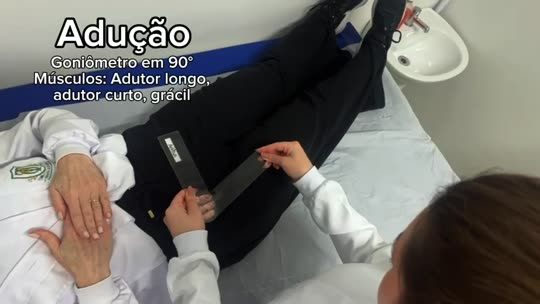

Reflexão
O que fica dessa aula: como a posição do paciente (deitado, com o joelho fletido) interfere na medida do quadril, por que a extensão de joelho costuma dar 0° em quem não tem hiperextensão, e como a mobilidade dessas três articulações trabalha em conjunto durante a marcha.
Exercícios na academia
Quarto encontro da disciplina, já com um conteúdo novo: cinemática e biomecânica aplicadas ao treinamento em academia. Antes da parte prática, o professor Rafael passou os conceitos em slides; depois fomos para a academia da Unidavi colocar tudo em prática.
Contexto: cinemática e o movimento humano
Cinemática é a parte da biomecânica que descreve o movimento dos corpos no espaço e no tempo, sem se preocupar com as forças que o geram — cuida de deslocamento, velocidade e aceleração. Divide-se em cinemática linear (deslocamento de um ponto numa linha reta ou curva, como caminhar) e cinemática angular (rotação de um segmento em torno de um eixo, como a flexão do cotovelo). Na Terapia Ocupacional, esse conhecimento ajuda a identificar disfunções de movimento, acompanhar o progresso da reabilitação de forma quantificada e ajustar os exercícios prescritos.
- Formas de movimento: retilíneo, rotacional (angular) e curvilíneo (geral) — a combinação de translação e rotação é a mais comum no movimento humano real.
- Agonista: músculo principal responsável pelo movimento (ex.: bíceps na rosca direta).
- Antagonista: atua em oposição ao agonista, controlando e estabilizando o movimento (ex.: tríceps na rosca direta).
- Sinergista: auxilia o agonista, estabilizando articulações adjacentes e refinando a trajetória.
Tipos de contração e de exercício
- Isométrica: o músculo gera tensão sem alterar o comprimento (ex.: prancha).
- Isotônica concêntrica: o músculo se encurta durante o esforço (ex.: subida da rosca bíceps).
- Isotônica excêntrica: o músculo se alonga sob tensão, na desaceleração (ex.: descida controlada da rosca) — gera maior dano muscular e adaptação.
- Monoarticular: envolve uma articulação, permite isolamento muscular (ex.: cadeira extensora). Multiarticular: envolve duas ou mais articulações, maior gasto energético (ex.: leg press).
- Cadeia cinética aberta (CCA): o segmento distal move-se livremente no espaço (ex.: rosca direta). Cadeia cinética fechada (CCF): o segmento distal permanece fixo numa superfície, com maior estabilidade articular (ex.: agachamento, leg press).
Treinamento em academia e princípios
- Predominância aeróbica: exercícios de longa duração e intensidade baixa a moderada (esteira, bicicleta), usando o sistema oxidativo. Predominância anaeróbica: exercícios de alta intensidade e curta duração (musculação), usando os sistemas glicolítico e fosfagênico.
- Fibras musculares: tipo I (lentas, resistentes à fadiga), tipo IIa (intermediárias) e tipo IIx (rápidas, potentes, fadigam rápido).
- Objetivos de treino: força máxima (cargas altas, poucas repetições), hipertrofia (cargas moderadas, repetições intermediárias) e resistência muscular (cargas baixas, muitas repetições).
- Princípios do treinamento: individualidade biológica (cada pessoa responde de forma única), sobrecarga (o estímulo deve superar o nível habitual) e especificidade (o corpo se adapta ao tipo de exercício praticado).
- Fatores limitantes: fadiga muscular (acúmulo de metabólitos e falha na transmissão neuromuscular) e cãibras (depleção de eletrólitos e disparos neuromusculares descoordenados).
O que fizemos
Fomos até a academia da Unidavi para a parte prática. Cada integrante filmou um exercício de um grupo muscular diferente, identificando os músculos agonista, antagonista e sinergista, e classificando o movimento como cadeia cinética aberta ou fechada. No fim, cada um preencheu seu roteiro individualmente e entregou no Google Classroom, usando cargas baixas para evitar lesões.
Roteiro preenchido
| Grupo muscular | Exercício | Agonista | Antagonista | Sinergista | Cadeia cinética |
|---|---|---|---|---|---|
| Peitoral | Voador | Peitoral maior | Deltoide posterior | Deltoide anterior | Aberta |
| Costas | Puxada alta | Latíssimo do dorso | Deltoide anterior | Braquial | Aberta |
| Braços | Tríceps polia | Tríceps braquial | Bíceps braquial | Deltoide posterior | Aberta |
| Ombro | Desenvolvimento c/ halteres | Deltoide | Bíceps braquial | Tríceps braquial | Aberta |
| Quadril | Leg Press | Quadríceps femoral | Isquiotibiais | Glúteo máximo | Fechada |
Filmagens e fotos
Cada integrante do grupo filmou um exercício de um grupo muscular diferente, na academia da Unidavi.
Reflexão
O que fica dessa aula: como dá pra identificar o agonista de um exercício só observando o movimento produzido, por que exercícios em cadeia fechada costumam ser mais seguros pra quem está começando, e como esses princípios de treino se conectam com a prescrição de exercícios na Terapia Ocupacional.
Cinesiologia aplicada à função — Caso 1
Quinto encontro da disciplina: situações-problema envolvendo dificuldades funcionais. Cada grupo recebeu um caso clínico próprio e precisou montar um treino com 2 exercícios, aplicando os conhecimentos de Cinesiologia vistos até então.
Contexto: como funciona a atividade
Para cada exercício escolhido, era preciso: identificar as articulações e os movimentos predominantes; apontar os principais músculos envolvidos; relacionar o exercício com a capacidade funcional que precisava ser trabalhada; e explicar de que forma esse exercício contribuía para a atividade-alvo. O ponto central: não bastava justificar a escolha pela musculatura trabalhada — era necessário montar a cadeia completa exercício → movimento/capacidade → atividade funcional.
Nosso caso: Carlos, 68 anos
Problema funcional: Carlos vive com a esposa e ainda é independente na maioria das AVDs, mas nos últimos meses começou a ter dificuldade para se levantar de cadeiras baixas e do vaso sanitário. Precisa se apoiar nos braços da cadeira ou nas próprias coxas para iniciar o movimento; sem apoio, fica inseguro e faz tudo bem devagar. Na hora de sentar, tem dificuldade em controlar a descida e às vezes acaba "caindo" sobre a cadeira. Não relata dor forte, mas sente os membros inferiores fracos, principalmente depois de ficar um tempo sentado.
Objetivo do treino: melhorar a força dos membros inferiores, o controle do movimento e a segurança durante as transferências sentado ↔ em pé, favorecendo mais independência nas AVDs.
Perguntas respondidas pelo grupo
1–2. Movimentos ao levantar e ao sentar
Levantar: flexão do tronco (desloca o centro de massa para frente) → flexão de quadril e joelho → dorsiflexão do tornozelo (projeta o corpo para frente) → extensão de quadril e joelho, elevando o corpo → tornozelo estabiliza a subida.
Sentar: praticamente o inverso — flexão de quadril, flexão dos joelhos, dorsiflexão do tornozelo e flexão controlada do tronco. O ponto mais importante no caso do Carlos é o controle da descida: os músculos não relaxam, eles controlam a velocidade principalmente por contração excêntrica.
3–4. Articulações e músculos envolvidos
- Quadril: flexão e extensão — projeta o corpo à frente e depois estende para ficar em pé.
- Joelho: flexão e extensão — a extensão é fundamental para elevar o corpo.
- Tornozelo: dorsiflexão — desloca o corpo à frente e ajuda no equilíbrio.
- Coluna/tronco: controla a inclinação durante a transferência de peso.
- Quadríceps: extensão do joelho, para sair da posição sentada.
- Glúteo máximo: extensão do quadril, na fase de subida.
- Isquiotibiais: auxiliam o quadril e o controle do movimento.
- Tríceps sural: estabiliza o tornozelo durante a transferência.
Exercícios escolhidos
| Exercício | Principal objetivo | Relação com sentar/levantar |
|---|---|---|
| Agachamento na caixa | Treinar força, controle e coordenação | Reproduz diretamente o movimento funcional |
| Cadeira extensora | Fortalecer quadríceps | Auxilia na extensão do joelho para levantar |
| Cadeira flexora | Fortalecer isquiotibiais | Contribui para controle e estabilidade do membro inferior |
| Elevação pélvica | Fortalecer glúteos e extensores do quadril | Auxilia na extensão do quadril durante a subida |
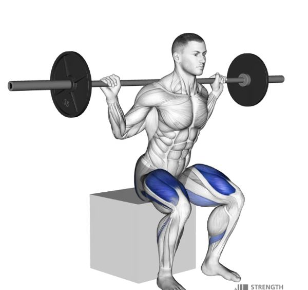
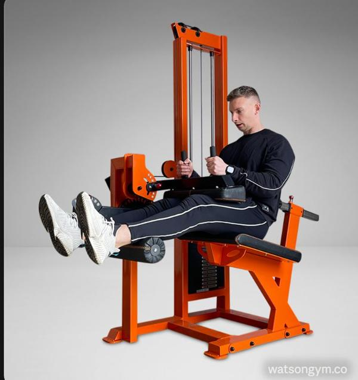
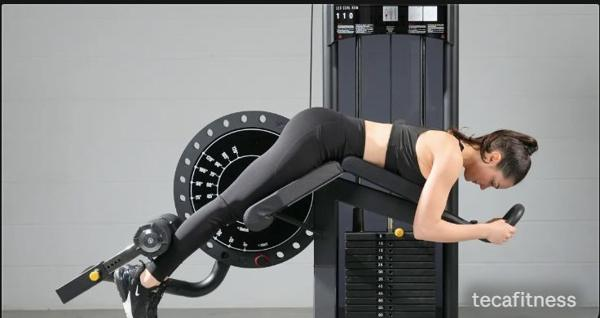
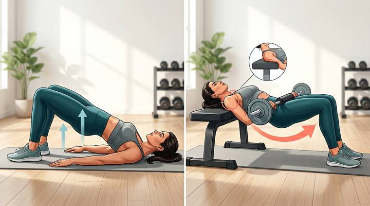
Exercício principal — agachamento na caixa: Carlos fica em pé em frente à caixa/banco, com os pés estáveis. No início, o instrutor oferece as mãos como auxílio para dar segurança. Ele inclina o tronco à frente, flexiona quadril e joelhos, desce de forma controlada até encostar na caixa, depois estende quadril e joelhos para voltar à posição em pé. O auxílio do instrutor é reduzido aos poucos, conforme Carlos ganha força e segurança. Foi escolhido como exercício principal por reproduzir de perto a atividade de sentar e levantar, trabalhando força, coordenação, equilíbrio e controle da descida — os outros três exercícios (cadeira extensora, cadeira flexora e elevação pélvica) fortalecem isoladamente os músculos que entram nesse movimento.
Se houver déficit de força
Caso Carlos apresente déficit de força (sobretudo em quadríceps e glúteos), tende a compensar puxando mais pelos braços, apoiando as mãos nas coxas, inclinando o tronco mais para frente, executando o movimento mais devagar, precisando de apoio externo, sentindo mais dificuldade em superfícies baixas e podendo "cair" sobre a cadeira na descida. Por isso o treino não foca só em força — ele também trabalha controle, equilíbrio, coordenação e segurança.
Conclusão do grupo
O caso do Carlos evidencia uma dificuldade funcional ligada principalmente à fraqueza dos membros inferiores e à dificuldade de controlar a transição entre sentado e em pé, com quadril, joelho, tornozelo e tronco atuando de forma integrada — com destaque para quadríceps, glúteo máximo e isquiotibiais. Enquanto a cadeira extensora, a cadeira flexora e a elevação pélvica fortalecem essa musculatura de forma isolada, o agachamento na caixa junta força e controle num movimento parecido com o que Carlos precisa executar no cotidiano: fortalecimento muscular → integração dos movimentos → treino da função.
Roteiro original
Ver o roteiro completo (Caso 1)
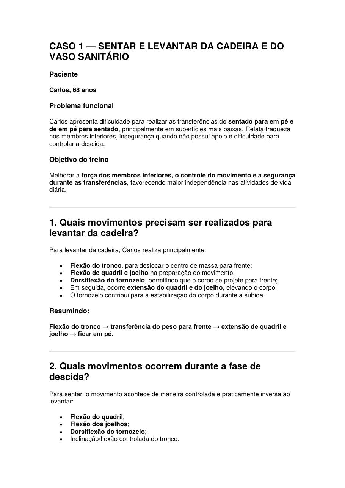
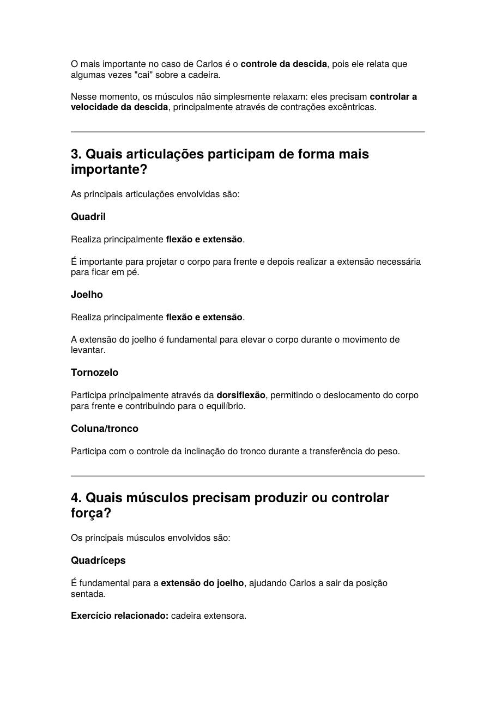
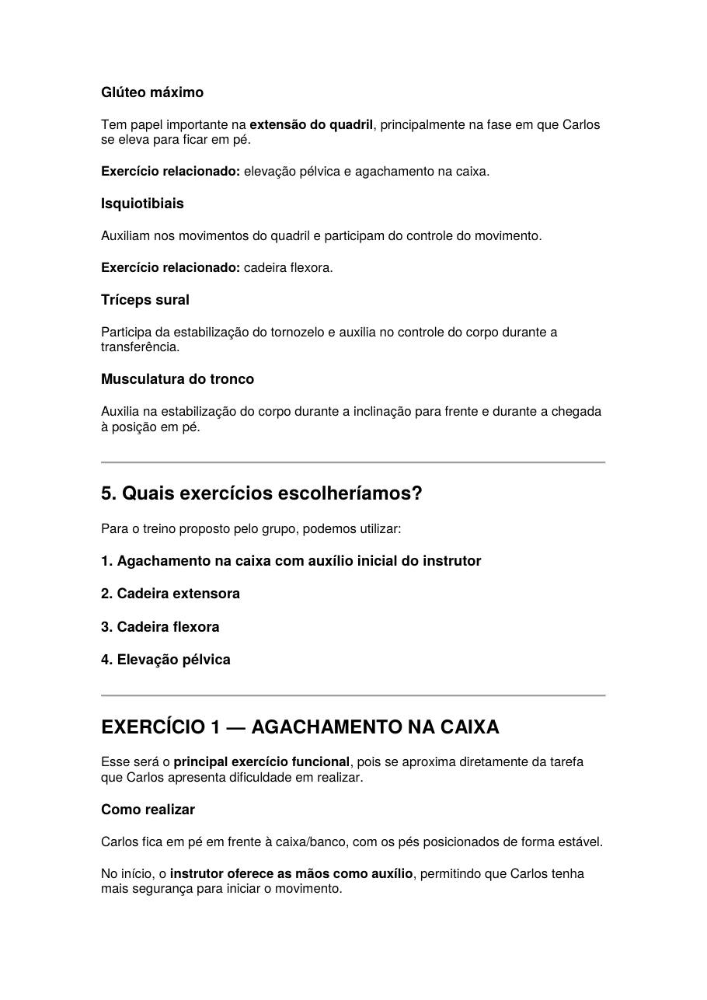
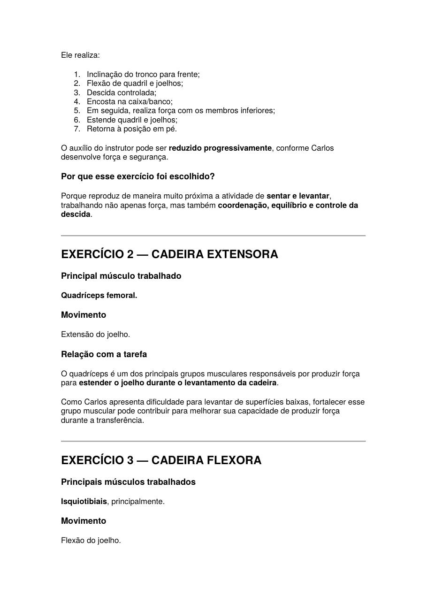
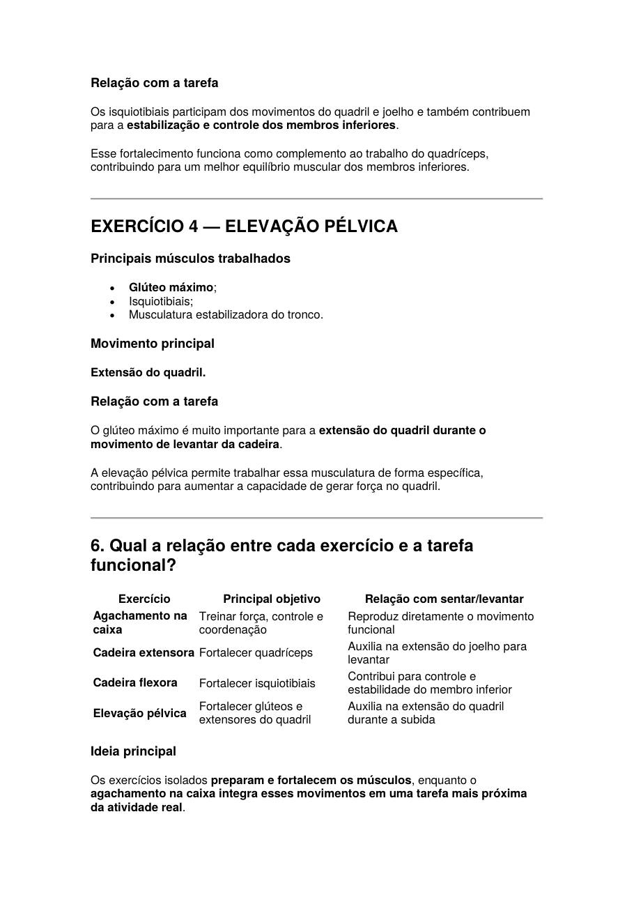
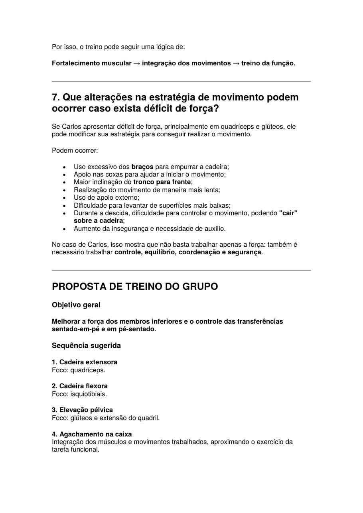
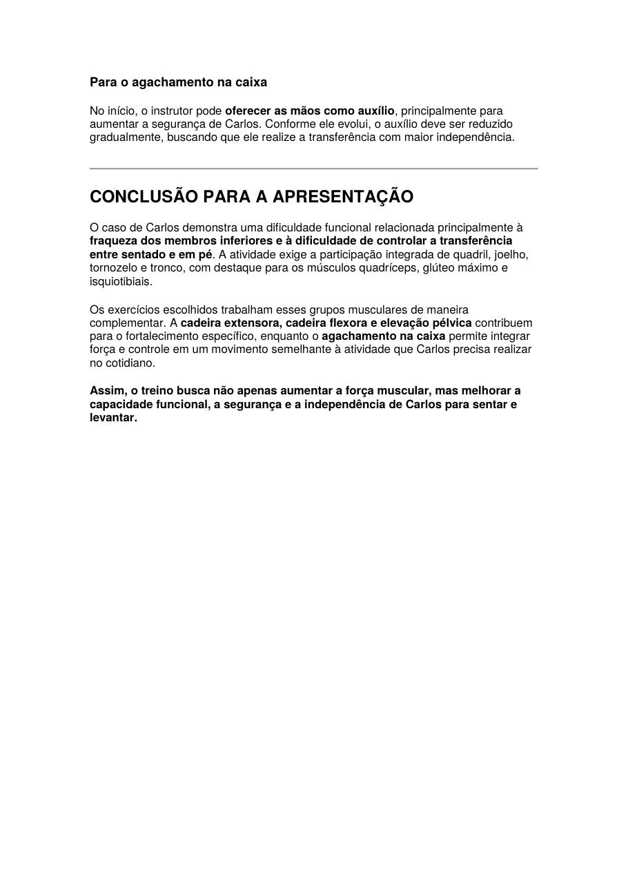
Reflexão
O que fica dessa aula: por que a escolha de um exercício não pode se apoiar só no músculo trabalhado, como a contração excêntrica aparece em atividades do dia a dia (por exemplo, controlar a descida ao sentar), e como essa lógica de "fortalecimento → integração → função" se aplica ao raciocínio clínico da Terapia Ocupacional.
Treinamento de força — Teste de 1RM
Sexto e último encontro da disciplina: treinamento de força e avaliação da força muscular por meio do teste de 1 repetição máxima (1RM) e da dinamometria.
Contexto: o que é o teste de 1RM
Definição: o 1RM corresponde à carga máxima que a pessoa consegue mover uma única vez, com a execução completa e correta do movimento.
Forma clássica: após o aquecimento e a familiarização com o aparelho, o avaliado define uma carga máxima para o exercício e tem até 5 tentativas — sempre com 3 minutos de descanso entre elas — até alcançar o 1RM real.
Forma adaptada (a que usamos em aula): nessa variação, o avaliador escolhe uma carga e pede 12 repetições em ritmo constante, sem parar. Se o avaliado completa as 12, descansa 5 minutos, sobe o peso e repete o teste — até 3 vezes, sempre respeitando o limite de repetições que a pessoa consegue cumprir. A partir do número de repetições feitas, estima-se o 1RM com uma tabela de referência (regra de três): 1RM = 100% da carga, 2RM ≈ 95%, 4RM ≈ 90%, 6RM ≈ 85%, 8RM ≈ 80%, 10RM ≈ 75%, 12RM ≈ 70%.
Atividade 1 — Teste de 1RM (forma adaptada)
Cada grupo escolheu um exercício de membros superiores e outro de membros inferiores, aplicando o teste adaptado num colega do próprio grupo.
| Membro | Exercício | Avaliado(a) | 1RM estimado |
|---|---|---|---|
| Membros superiores | Supino reto | Jennyfer | 24 kg |
| Membros inferiores | Cadeira extensora | Jennyfer | 66,66 kg |
Atividade 2 — Avaliação com dinamômetros
Fizemos também a avaliação da força de preensão manual (dinamômetro manual) e da força de tronco (dinamômetro de tronco), cada uma aplicada num colega diferente.
| Instrumento | Avaliado(a) | Valor |
|---|---|---|
| Dinamômetro manual | Jennyfer | 50 |
| Dinamômetro de tronco | Sirlene | 70 |
Aplicabilidade e importância da avaliação com o dinamômetro: essa avaliação é essencial para medir a força muscular de forma objetiva, possibilitando identificar o nível de força da pessoa e acompanhar sua evolução ao longo do treino ou de um processo de reabilitação. Enquanto o dinamômetro manual mede a força de preensão da mão, o dinamômetro de tronco avalia a força relacionada à musculatura do tronco. Dentro da Terapia Ocupacional, esses dados ajudam a identificar limitações de força que possam atrapalhar o desempenho nas atividades de vida diária, atividades instrumentais, trabalho e lazer, além de apoiar o planejamento das intervenções e a comparação da evolução do paciente ao longo do acompanhamento — em resumo, a dinamometria fornece dados quantitativos valiosos para a avaliação funcional.
Filmagens e fotos
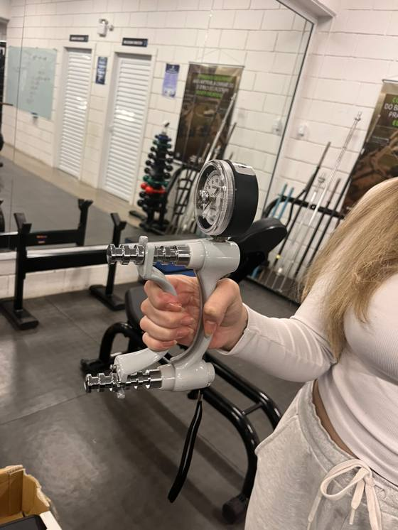
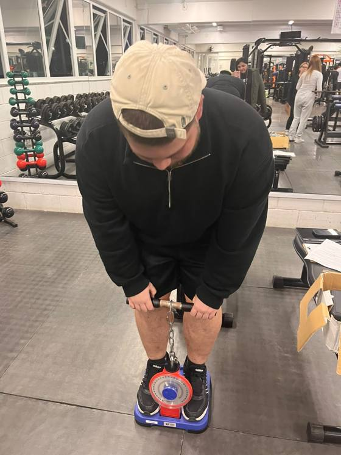
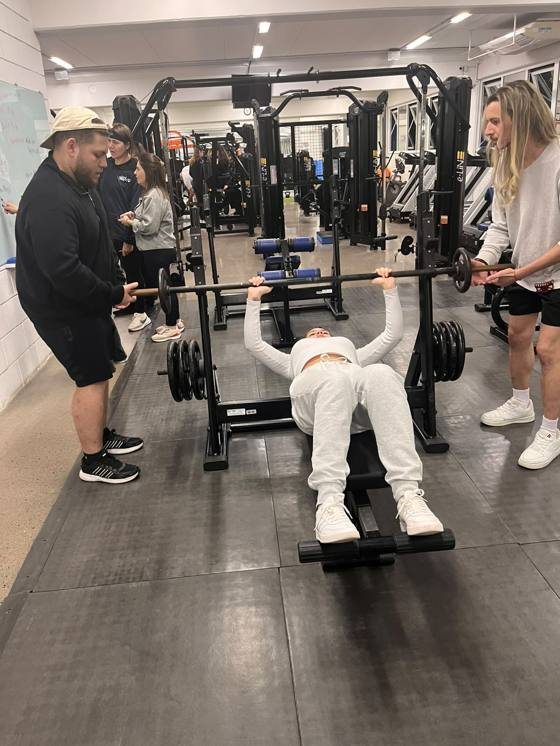
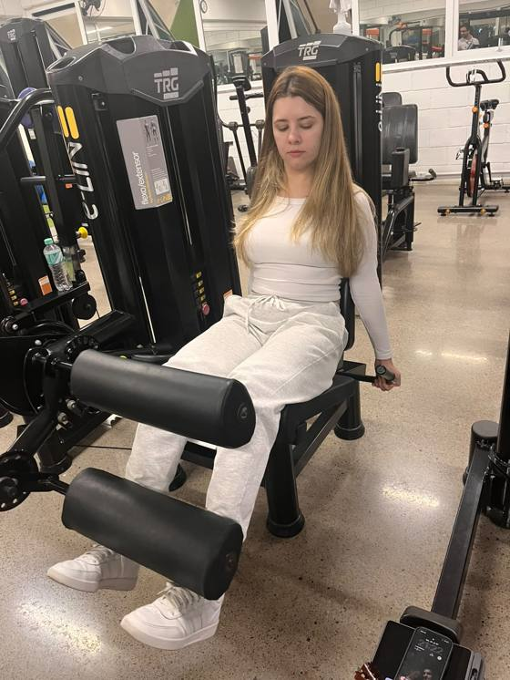
Reflexão
O que fica dessa aula: a diferença entre a forma clássica e a forma adaptada do teste de 1RM, por que a forma adaptada é mais segura num contexto de avaliação (evita cargas máximas sem familiarização prévia), e como a dinamometria pode apoiar, na Terapia Ocupacional, a avaliação objetiva de força e o acompanhamento funcional do paciente.
Conclusão do portfólio
Ao longo dessas seis aulas de Cinesiologia, passamos por avaliação articular (goniometria de punho, coluna, ombro, cotovelo e membros inferiores), pela aplicação desses conceitos numa situação funcional real (o caso do Carlos e a dificuldade de sentar e levantar) e pela avaliação e treinamento de força (exercícios na academia e teste de 1RM). Cada aula trouxe uma peça diferente: primeiro aprendemos a medir o movimento, depois a entender por que ele acontece e quais músculos participam, e por fim como treinar e mensurar força de forma segura.
Para a Terapia Ocupacional, esse conteúdo é base pra praticamente tudo: sem entender goniometria, biomecânica e força muscular não dá pra avaliar direito uma limitação funcional, nem propor um treino ou uma adaptação que realmente funcione pro paciente. Cinesiologia não é só "teoria de academia" — é a ferramenta que vai me ajudar a olhar pra um movimento do dia a dia (sentar, levantar, pegar um objeto) e entender o que está acontecendo, articulação por articulação, músculo por músculo.
Fechando esse portfólio, fica claro que essas seis aulas formam uma linha bem conectada: avaliar → entender → intervir — que é, no fundo, a lógica que vou levar comigo o curso todo como futuro terapeuta ocupacional.